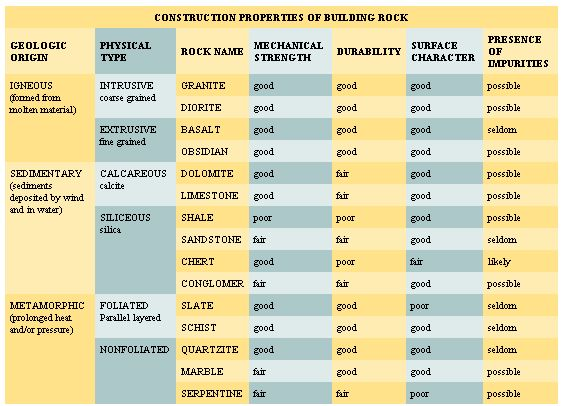
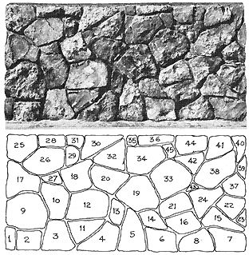
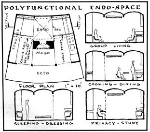
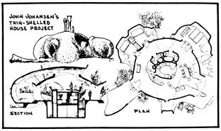
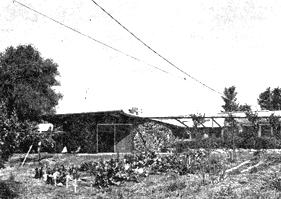
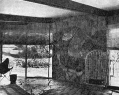
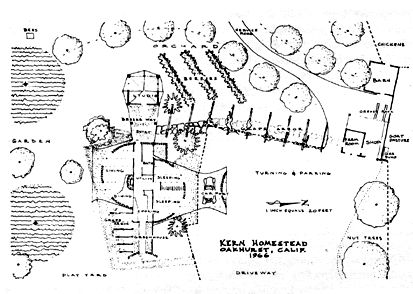

The Owner Built Home & Homestead
September/October 1970
STONE
MASONRY
Next to plain dirt, stone (or rock) is the least exploited of all materials for building construction. And like earth-which has been used for centuries in building walls, floors and roofs-rock is most readily available at little or no money cost. It can be gathered (usually free for the hauling) from any streambed, from abandoned mines and quarries, or from open fields and embankment cuts. There is hardly a region in the country that doesn't contain a substantial resource of building stone.
Maps and aerial photographs of one's region are generally available, and can be employed to advantage in locating building stone. Agricultural soil maps are revealing and thorough. Geologic maps indicate existing pit and quarry sites as well as the type and structure of the rock. U.S. Coast and Geodetic Survey maps cover nearly every section of the country. They are especially helpful in locating abandoned ore mines. Tailings from mines are among the best sources of building stone. From aerial photos one can locate such rock-laden features as excavations, outcroppings, cliffs abandoned railroad and road cuts and natural streambeds.
With such widespread availability, one asks, why is building stone so rarely exploited by homebuilders? Because building with stone is similar to building with earth: There is a large "time" and "labor" factor involved in gathering and placing the material into a wall. But the average Owner-Builder's time and labor resource customarily outweighs his capital resource, so this cannot always be considered a serious handicap.
Perhaps a more pertinent answer to this query lies in the fact that stone masonry technology-more than any of the other building trade skills-has been traditionally clothed in secrecy. Carl Schmidt, in his little book on Cobblestone Architecture, illustrates this point:
Several very old men, who as little boys saw cobblestone masons at work, readily recall the jealousies among the masons. Whenever a visitor appeared while they were working, they would stop work, hide their tools and do something else until the visitor went on his way. The fact that these men succeeded very well in keeping their own methods a secret, explains the different mannerisms found in the method of laying up the walls.
Through the centuries stone masons also have succeeded in maintaining a respectable, highly paid and somewhat apostolic status in the building industry. Their "trade secrets" are maintained to this day, and include such important items as an intimate knowledge of rock, the correct mortar proportions and use of auxilary materials, the proper selection of tools and organization of work procedure and-finally-an esthetic awareness of the rock in place: The total effect and composition of the finished wall.
Intensive research on stone masonry reveals that no pertinent literature exists on the subject that is applicable to the unskilled Owner-Builder. Stone masons maintain their closed shop. In this chapter an attempt is made to close the enigmatic gap.
With fear of over-simplifying the stone masonry skill it should be stated that the foremost prerequisite of any mason worth his mortar is an intimate-nearly intuitive-knowledge of rock. Pick up a rock. Where the inexperienced observes color, weight and form, the experienced stone mason notices bedding, seams, rift and grain. He first visualizes the rock in place, laid on its natural bedding. Bedding is recognized by a granular change in color or texture. It is mostly prevalent in sedimentary rock, where changing conditions of deposition of sediment under water occur.
Bedding joints are horizontal, but seams are generally vertical, to the rock surface. Seams are regular in limestone and irregular in granite. They occur in rock as a result of compression and tension stresses in earth forms. The direction of greatest ease of splitting in a rock is called the rift . It may be parallel to the seam. A second, more minor, direction of splitting is called the grain. Only the most experienced mason can detect grain direction.
Several simplified systems of rock identification have been devised to assist the mason in his choice of building stone. Rock classification can be physical, differentiating between unstratified and stratified rock, or it can be of a chemical nature, dividing rock into its siliceous (sandy), agrillaceous (clayey) or calcareous (limey) composition. The classical classification of rock, however, is based upon geological origin-ingeous, sedimentary and metamorphic. A composite classification system of the more common building stones, along with their significant construction properties is presented below.
This chapter is one of the few with no bibliography at the end. The dearth of books may be a continuance of the "closed shop" stone masonry conspiracy mentioned earlier: In any event there are no contemporary manuals on laying up building stone. The Audel reference text on masonry is typical of what is currently available: The stone masonry techniques and tools discussed date back to antiquity. The correct hammer and chisel are identified, as is the manner of squaring huge marble building blocks.
A number of unlikely research sources were used to compile this chapter; but primarily the actual stone-laying experience of the author over the past fifteen years forms the nitty-gritty of what is to follow.
The rock classification system illustrated above can prove of only general value to the Owner-Builder mason. Let's have a closer look at choosing your rock and building with this natural resource. Accessibility of the rock must be one of the prime criterion. An expensive quarrying or hauling operation can be a deterrent sufficient to dissuade one from using this material in his building. In some instances a particularly hard rock is called for-as in floors and steps. Rock with cleavage (a splitting quality) is generally a more valuable characteristic than a block-like monolithic quality.
Of course we desire to build a durable wall, and one that will withstand rain, wind, frost, heat and fire. A building stone "life" ranges from 10 to 200 years. Frost damage is common to softer and porous rock. Again, if rock is not laid on its natural bed-face, frost action will tend to laminate the layers. Another important rule: The strength of the mortar should equal the strength of the rock. An excessively rich mortar is more pervious than a weaker mortar because shrinkage-cracking occurs in rich mortar. Mortar joints are the most vulnerable part of the wall to moisture penetration.
Granites are the least affected by weathering: Limestone and sandstone the most. They are commonly destroyed by surface erosion (from sea salts, for instance) and atmospheric pollution. Rain will leach the cementitious materials found in some sandstone to the surface, where they become brittle, weak and finally flake off.
A number of stone preservatives are available, designed to protect rock from the aforementioned frost and moisture penetration hazards. A waterproofing agent prevents the penetration of moisture but the moisture that does gain access into the wall is not permitted to escape. This is bad. The wall should "breathe", whatever material is used. Moreover, the outer waterproofing layer is a thin skin which differs in physical properties from the underlying material. This difference causes certain stresses to be set up which inevitably force the outside skin to flake off.
One may reason that strength should be the foremost requisite of rock for building purposes. Rock that is sound and suitable in other respects, however, is almost invariably strong enough for use in a wall. Recent tests at the U.S. Bureau of Standards on samples of Montana quartzite indicated a compressive strength of 63,000 pounds per square inch (a rather typical rock strength). A structure of such material would have to be over 10 miles high before failure would occur from crushing the lower courses!
Another good example of structural strength is illustrated in the 555-foot high Washington Monument. Pressure at the base course is 700 pounds per square inch; but marble will sustain a crushing load of 25,000 pounds.
The appearance of your dwelling should not be underestimated when choosing a building stone. Every rock has its unique color and rock of different color can be mixed in a wall. Every rock also has its unique lustre, be it vitreous, pearly, resinous, dull, metallic or whatever. Rock containing much iron should be avoided, since stains caused by oxidation of iron under atmospheric influence will discolor the mortar.
Some rock can be "worked" better than others. Angular, square-edged, quarried rock "lays up" better than roundish cobblestone boulders. The last are sometimes called "rolling stones", because they are loosened and weathered from the parent ledge by natural processes.
Workability depends as much upon the correct mortar mix as it does upon the type of rock laid. A proper mortar is weather resistant and has adequate bond strength and compressive strength. The proportion of sand, cement, fire-clay-and especially-water must be controlled to within a narrow margin. The optimum proportion is 12 shovels of clean, washed concrete sand, 4 shovels common cement and 2 shovels fireclay.
To give you a better appreciation of this optimum proportioning, make a trial mix in the kitchen, using oven-dried sand in a measuring cup: 12 oz. sand; 4 oz. cement; 2 oz, fireclay; 5 oz. water.
The actual process of laying stone consists, first, of spreading a uniform layer of mortar, then forcing stone into its bed (a bed can also refer to the top or bottom of a stone). The mortar should be stiff enough to support the stone without letting it touch the stone underneath.
A bedding trowel is used by stone masons for spreading large mortar beds. Unlike a brick mason's sharp-pointed trowel, the bedding trowel has a rounded end. Two sizes are commonly used. The 2 1/2 cubic foot detachable steel drum concrete-mortar mixer sold by Sears is entirely sufficient for either small or extensive masonry work.
After a course-or layer-of stone is laid, the wall behind the facing stone must be carried up, to give support to the face. This is termed backing and usually consists of a cheaper class of masonry, or poured concrete, bonded directly to the face. Bondstones act as ties, bridging face to backing. Metal strips-masonry ties-are also commonly used to tie the face to the backing.
The simplest, fastest, and in all respects neatest type of stone masonry pattern for the Owner-Builder to work is called "cyclopean" masonry. Various sizes and shapes of stone are used in cyclopean masonry, with no respect to regular courses. Joints-spaces between stones-look best cut deep. A 1/2-wide tucking trowel is used for this purpose. Master stone masons can be rightfully proud of their time-consumed "varicose vein" joints, but the effort required is not compensated for in the final result.
There are several design features of cyclopean masonry that are essential to wall that "reads" well. First of all it is essential to break the joints. Then too, rock sizes should be well proportioned and graded from the small "spans" (rocks filled into spaces too small for regular sizes) to a larger size stone that is proportional to the size of the wall. Triangular-shaped stone, or long sliver-like specimens should be placed so as to give a directional vitality to the wall. A triangular stone with the apex pointing down gives a more dynamic impression than if it points up. A common error most amateur stone masons make is to congregate the larger size rock near the base course and finish the upper portion with progressively smaller and smaller sizes. This is no design or style-looks like the builder ran out of good material.
T he stone wall-panel illustrated here is an example of better-than-average masonry. The rock forms are natural-and thus restful-and rock sizes are pleasingly proportioned to the total size of the panel. Triangular, square and various other shapes are thoughtfully distributed to create a dynamic, readable composition. Deeply recessed joints assist
the eye in its movement and re-grouping experience.
The most obvious re-grouping consists of rocks 3, 11, 12, 10, 27, 18, 26 and 29. A readable directional quality is attained without lining-up joints. Notice how rock 34 breaks the joint line between 19 and 33, 14 and 21, 6 and 16 and 8. Vitality is also achieved by strategically placing triangular forms such as rocks 24, 11 and 30. The downward pointing apex adds a dynamic "unbalanced" aspect to the composition.
A final feature that qualifies this panel for professional status is the thoughtful placement of base, corner and top rock courses. Top corner rock 25, for instance, is more massive than bottom corner rock 1. Base rocks 1 and 2 are powered over by corner rock 9. Top rock 30 compliments its lower neighbor rock 32, thereby creating a re-grouping which consists of rocks 30, 32, 20 and part of 18.
A few detractive criticisms of this panel may also be in order: Rock 43 is the only spall, or fragment, used even though places exist for at least a half-dozen more, such as between rocks 8 and 16 and between rocks 13 and 12. Notice how beautifully spall 43 intergrates neighboring rocks 33, 38, 24 and 21. Corner rock 37 should never have been used: The top slope makes it difficult to set the next corner rock 39. The top corner rock 40 adds further to this conflict: Its effect is to wedge rock 39 out at the top while at the same time it appears to be slipping from its bed. The left-hand side of this panel has much more stability and grace than the right-hand side.
The sequence of rock laying is indicated numerically: Notice that one begins at the left-hand corner and works to the right. Corners are always set first and interior spaces then filled in. Generally larger rocks are set first, with smaller ones filled in around them. It is simpler to fit smaller rocks around large ones than it is to find a place for a large one.
Large rock 26, for instance, is bedded on rocks 17 and 18 and small rock 27 is set after the cavity has been fully defined. Top rock 30 is temporarily propped into position so that the top is level with the top of the wall. A filler rock (32) is then found to fit the cavity. Small rocks, especially spalls (see 43), are always set after the larger rocks are in place.
Corners are always set first in wall work, and edges are layed first in flatwork (such as slate floors). Below is an illustrated sequence of stone layed in a typical wall panel.
Once the basic mechanics of stone laying are mastered, design subtleties in rock can be incorporated which add immense interest to the building as well as enhanced value to the masonry. The 8-foot square stone mosaic in our living room (illustrated in the Epilog) was constructed of white granite, brown sandstone, black slate and blue river-rock. Except for such art-panels, the problem of combining stone is generally a ticklish matter. Colors should be harmonious. Ordinarily only stone of similar hardness should be used.
In a building, a harmonious interplay of stone, wood and glass is always sought. Stone should contrast with these other building elements as well as with the native surroundings. On a sloping site, for instance, a massive stone foundation wall binds the building to the sloping terrain; it links the natural landscape to the formal discipline of the building.
Success in building with rock is not easy. But no material blends as well with the natural environment or reveals the personal artistry of the builder.
Stone walls should be treated with respect to the shape of the building. The recently completed Woolman School social hall (Nevada City, California) is a good example. It has circular, cloverleaf-like wall panels and the roundish building stone reaffirms the curvilinear motif. The outside concrete walls of this building were constructed with a sliding horizontal slip form, then faced with stone with a layer of fiberglass insulation between. Barbwire ties embedded in the concrete wall, form concrete and stone facing into a homogeneous mass. The stone-faced circular slip form construction methods developed on this project is without doubt the best system for an inexperienced Owner-Builder to tackle.
INSIDE YOUR HOME
Modern architects have been harping continually on what is different in our time to such an extent that they have lost touch with what is not different, with what is essentially the same.
Aldo van Eyck.
Exciting changes are happening to the "interior design" segment of new-era housing. Laotsu has been quoted elsewhere as saying that the important part of a building is not the walls and roof but the empty spaces inside. For purposes of discussion we must differentiate between inside space and outside form. Frank Lloyd Wright said that what happened on the outside occurred because of what was happening on the inside. Houses should be designed essentially around what we do in them.
Let us recognize, first of all, the animal nature of man; we design to satisfy needs or, more simply, we design to secure comfort. Heretofore, this book has been devoted to aspects of achieving physical comfort; something needs to be said for the even more important concept of psychological comfort. The overall effect upon one's senses and consciousness by interior spaces defies definition, but it can be partially analyzed. Sensory reactions to a room environment can be relaxing and invigorating, or it can be disturbing.
The Owner-Builder who expects to attaina pleasing interior environment should first of all not take himself too seriously. His tone should be o ne of relaxed informality; he should keep experimental and loose and, above all, the creating (living) experience should be fun.
Architect Venturi goes even further; he claims that the best architecture is not symmetrical or balanced; nor is it clean and simple, logical and formalized. According to Venturi, to achieve a vital and timely reality, the architecture must contain what traditionalists would call confusions and distortions; it must be complex, "contradictory," ambiguous and contain downright "error" in concept and execution!
Our reaction to an enclosed space is a reaction to size, shape, light, color, openness, etc. To a space-sensitive person a long and seemingly endless corridor is disturbing: Anxiety is created because this type of space encourages distortions of preception. Also, a space that does not have a clearly defined size or shape can produce a feeling of insecurity. A space should be immediately comprehensible.
The new look in building interiors is one of boldness with lighting in design and color. Lighting is no longer thought of in reference to mere illumination. Rather, psychological relief and atmosphere are prime concerns. Spots are employed to highlight or wash; recessed "down-lights" create smug and sophisticated qualities; table and floor lamps are works of sculpture.
On the one hand, we seek to create a psychologically stimulating environment-yet on the other hand, the space must not draw too much attention to itself apart from its function in our home-life. It should complement, not compete with, social contact. We all know the hassel of personally competing with many so-called "conversation pieces."
The need for genuine social contact, and also for privacy, in our living environment is of uppermost importance. In each case, a satisfactory experience is possible only by freeing our environment of all barriers. Alienation is aggravated by a bad spatial environment, and relieved by a good spatial environment. Circulation paths should be laid out so as to provide people with contact to all activities. An immediate work space should have a visual relation to the total space. A face-to-face personal contact can sometimes be furthered by the simple use of adjustable furniture.
Some furniture items can be advantageously mounted on wheels. But wherever possible use built-ins-they go far in eliminating the furniture clutter. Consolidation of furnishings is an attractive concept to people who are unencumbered by conventional trappings. Dispensing with the usual traditional paraphernalia has economic as well as social implications.
There is a major economic advantage in building minimal rather than fulsome interiors. The elimination of interior non-essentials radically miniaturizes dimensions. Some noteworthy concepts are called Room-within-a-room, Mini-room, and Living-centers.
Living-centers consist of clustering equipment and furniture into the central portion of a room. Furniture is consolidated instead of scattered around the perimeter. A Living-center contains "systems" furniture that does even more than synthesize and consolidate furniture and equipment. It provides a fresh, revolutionary view of the whole "furniture" concept. In a Living-center the furniture may very well consist of movable trays or platforms. They can be wheeled or slid or taken apart into various pieces or laid out in different ways. One polyfunctional Living-center may thus become a living, dining, sleeping, or study area.
This new-era furnishing concept is contrasted to current furniture arrangement practices in about the same way that a mobile-home furnishing arrangement relates to the interior of a boat. A boat is designed to utilize total space; emenities are built-in. The space in a boat is small but highly integrated. The mobile-home, on the otherhand, is also small in space, but it is furnished with the usual assortment of standard-sized appliances and furnishings. The basic prefabricated shell does not carry through to the inside.
Possibly the most satisfying sense of all is the sense of privacy. This refers to visual and acoustical privacy as well as spatial (touch) privacy. In this regard there is real danger in too much modern-day "open planning." Aldo van Eyck has said:
We must break away from the contemporary concept of spatial continuity, and the tendency to erase every articulation between spaces, i.e., outside and inside, between one space and another. Instead, the transition must be articulated by defining the in-between places which induce simultaneous awareness of what is significant on either side.
My endo-space, meso-space, ecto-space approach may help to clarify this concept, but continuing on may prove more confusing than helpful to the average Owner-Builder. Suffice it to say that the inside
tions should be allowed to change. Flexibility is the key here. Flexibility to satisfy all our senses and all our moods and life-programs. We need to sit in different ways at different times; and at different periods of life we need different places and arrangements for eating and sleeping.
When a Living-center "systems" furnishing is not employed, a room's floor should be kept bare; things can be stored out of the way conveniently in wall storage cabinets. Rooms too often become centers for the display of possessions. If passage areas are expanded into usable alcoves, the size of other rooms can be reduced, thereby saving on construction costs. Costs are also reduced by eliminating reveals and mouldi ngs-"trim." Flush, frameless window and door openings and broad expanses of plain surfaces also contribute to this end. Remember, a poorly designed interior cannot do permanent damage to a well-designed house-but it can surely ruin it for the duration of its occupancy.
One final word: Frank Lloyd Wright has said that corners put an end to space. This is a concept worthy of contemplation. It just may be that some of the exciting spatial features mentioned above can be achieved in a straightwalled structure only with the greatest difficulty and compromise. I have had sufficient design experience to appreciate the fact that a rectangular or cubic room is about the most depressing space imaginable, while a circular, curvilinear, or organic space-though it may seem novel or difficult to constructfeels right just in its own pure and simple "undesigned" form.
BIBLIOGRAPHY (books listed in order of importance)
Complexity and Contradiction in Architecture: Robert Venturi, 1966
The Hidden Dimension: Edward Hall, 1966
EPILOG
This epilog to The Owner-Built Home series is at the same time a prolog to my forthcoming book, The Owner-Built Homestead, now being written. It is idle to speculate on building one's own home in the city or suburb. One would be pounced upon by various officials before the first nail could be driven. Despotic union bosses and mercenary contractors' association scouts would soon squelch any do-it-yourself building activity-assuming the banker and building inspector would go so far as to authorize the work.
The factors that hamper and outlaw the owner-builder project in urban areas form only one small part of the argument for "rural living" solutions. Very soon in the construction process an owner-builder finds that positive resources are required that can come only from a rural environment in a more or less natural and friendly community. The two m ost important resources are freedom and health . An urban two-day-a-week, two-week-a-year home building program is next to worthless. One needs a block of free time to build a home. One also needs the energy and well-being that can come only with good nutrition, fresh air and clean water.
So a rural setting can verily support an owner-builder in a sort dovetailing set of circumstances. A family buys an acreage of land in hinterland where land is not so expensive. Taxes are therefore not so high. Building regulations are almost non-existent; so only moderate construction funds need be amassed. The land can be made productive and so cash need be earned for foodstuffs, thus allowing more time and money to be spent on building and land development. Nutritious food raised on the land can improve the family health, and thus more energy available for greater homestead development.
In a few years a family should be happily situated on its own debt-free home. How it should go about developing the (garden, orchard, pasture, woodlot), water supply, fencing, barns and buildings will be the subject of The Owner-Built Homestead.
The idea of a family earning its economic necessaries from a homestead (with a part-time money income to supply amenities which cannot be family produced) goes back to depression years when Roosevelt's Federal Security Administration dabbled in "subsistence farmsteads." But a much more significant contribution to this back-to-the-land movement was made by pioneers like Ralph Borsodi and Milton Wend.
Ralph Borsodi an d the books he wrote in the 30s (and since) helped shape the homestead trend. Economist Borsodi established his family homestead 25 miles above New York City in 1921, and saw the need for smal-lscale technology to help revive productive living. In 1929 he wrote his famous critique of modern culture This Ugly Civilization, and suggested that the small homestead was a human and constructive way out of the urban pressures he saw developing. All this was popularized in his Flight from the City , in 1938 (and later printings).
Borsodi, in effect, dropped the idea and reality of the modern homestead into the social pool in the 30s. The ripples of that act have spread far. Some of those affected, who have since spread the idea, included Milton Wend, Ed Robinson, J. I. Rodale, Paul Keene, Agnes Toms, Elizabeth Nutting and Mildred Loomis. Borsodi established the first School of Living near Suffern, N. Y., in 1937, to do research in how to live, to build homesteading communities, and to develop a curriculum for a new education for living.
Milton Wend, now of Edgartown, Mass., was a trustee of the first School of Living. His experiences and ideas were reported in his How to Live in the Country Without Farming. The book has been widely read. Wend is still active in his Human Engineering Institute.
Ed Robinson took over the idea from a School of Living brochure entitled Have More Vegetables, and developed his famous "Have More Plan" and country life bookstore. After a flourishing business, this was discontinued in the 50s.
J. I. Rodale visited the School of Living in 1938, and there saw the composted gardens, the use of whole foods, the grinding of grain into flour and cereal, and the regular baking of whole-meal bread. He went back to Emmaus, Pa., and later changed his publishing emphasis to gardening and homesteading. The magnificent growth and influence of the Rodale publishing enterprises are well-known today.
Mildred Jensen (Loomis) was assistant educational director of the Suffern School of Living (1938-40) and later continued that work avocationally at her home, Lane's End Homestead, near Brookville, Ohio. Her editing of journals (The Interpreter, Balanced Living, etc.) began in 1944 and continues in 1966 with the monthly Green Revolution and the bimonthly A Way Out. The numbers of people who have been influenced to the homestead way from these, and her book, Go Ahead and Live!, are uncounted. Some of the successful homesteads which have grown out of this work will be described and detailed in The Owner-Built Homestead.
During the depression of the 30s and 40s, books like Five Acres and Independence carried on Borsodi's early emphasis. But unfortunately these early writers and promoters of country life did not produce a dominant trend in our country. Why?
The reasons are many. The technological drift of the modern day had attained a momentum that could not be stopped by a trickle of counter-ideas. And the form and content of the discourse about rural living in the 30s and 40s were of a pre-depression vintage. Traditional living-patterns were dressed up in a "country living" format and presented as a bonafide original. Many would-be homesteaders became disillusioned.
There was no qualified, professional or educational assistance in the homestead movement. One exception to this was an architectural competition for a productive homestead, sponsored by the early Free America magazine.
So the first wave of homesteading interest in the late 30s and 40s diminished. Some leaders in the movement seemed to drift into specialized aspects such as organic gardening, nutrition or craft production. This was probably aided by the seemingly narrow and limited nature and understanding of homesteading. People thought that no earth-shaking revolution-or revelation-could ever come out of a potato patch!
Moreover, the high employment and Social Security benefits offered by the Great Society of the USA, with its war-making "power elite," tend to dissuade people from a life on the land. Government handouts in the city appear to be easier to accept than living by one's wits in the rural margins and "cracks of an affluent society."
But the urban culture of the war-making, land-owning, and money-owning "power elite" is now riding to a fall, as anyone who reads the newspapers can see. The overpopulated sinks of the city's poor naturally spawn riots. There must come a change. The homestead and village-community type of life that was disrupted at the dawn of history by the ravages of hunter-chieftains and warrior-kings from their city strongholds will have to be restored- with the addition, of course, of our present world-wide communication, free peaceful enterprise, scientific vision and ingenious technology.
The Owner-Built Homestead is intended to be a how to think it as well as a how to do it book. In addition, a personalized homestead-layout service is offered, showing long-range site-development plans to fit the homesteader's property, soil conditions, regional climate conditions, and specific personal requirements. It is hoped that each reader will avail himself of the opportunity to have a fully detailed home and homestead plan, designed exclusively to his own site and needs.
THE OWNER-BUILT HOMESTEAD
INTRODUCTION
It has been ten years since I first started writing THE OWNERBUILT HOME. At the outset of writing this first book there was some suggestion to expand it to include home food production along with the central theme of home shelter production. At that time the "back to the land" sentiment was all but dead in this country. So I brushed off the suggestion, and awaited with others an economic depression to revive the attitude of economic self-reliance. Theoretically, when great numbers of people lose their jobs and have only breadlines and welfare handouts to look to for sustenance, they will then consider, perhaps, home food-production. So for all these years I've been waiting for the expected catastrophe: It would highlight a widespread social need and orient my research effort toward fulfilling this need.
The kind of economic depression we pictured never, as you know. came off. On the contrary, purchasing power and employment in this country reached an all time high. But something far more serious has occurred; the beginnings of a world revolution. The past ten years has witnessed a many-sided challenge to the whole military-financial-urban-real-estate complex. The student rebellion, the minority revolts, the breakdown of urban America, and the mounting concern for the environment have led to an increasing exodus to the country-side.
More and more, retired and semi-retired people are looking to the small acreage. They are literally driven there by urban sprawl, noise, smog, high taxes, and inflation. The chaotic political state of the world stimulates many people to search for a more meaningful and natural value system.
There is another and more significant group of fresh recruits for rural living: The countless college students who have become disillusioned with their professional college training, shocked by our murderous war machine and alerted to the money-grabbing, life-negative forces within the establishment. I speak of the intelligent and able drop-outs, the turned-on, do-your-own-thing generation. It is chiefly for this dynamic and thoughtful generation, as well as for the mere refugees from the city, that I write this book on productive homesteading; an integral arrangement of earth, plants, animals, buildings and utilities.
In basic terms, I'm setting out here to promote the post modern way of country living. It is a life of self-reliance and at least partial economic self-sufficiency, but in a social and ecological context. Naturally, I'm attempting to sell these ideas to any and all. But the prospective buyer must have minimal emotional and technical potential and be in good position to leave the city. He must be fairly intelligent and have strong motivation and drive as well as ability to do manual work.
These requirements-especially being up to manual work-are, of course, seldom met by current youth. Their reaction against intellectualism is strong enough; but they just lack the manual skill and discipline-training necessary to satisfy their most basic needs. It is really tragic to observe so many mentally qualified young couples failing in their attempts to live on the land. In starting out they have no concept of step one-actual work-much less the whole complex of plant-animal-soil relationships, plus production-storage-processing, which takes the most knowledgeable and experienced farmer. Their failure disillusions them with the homestead scene, and they may react this time against the materials and tools and skills associated with living on the land. Thus the escapist talk nowadays about segregated tribal communes, primitive living, etc. They hate the computerized urban existence, and can't make it in the all-round homestead life; so the next step is to live isolated with fellow-failures.
This book, then, is an attempt to bridge the gap between primitive inability and a wholesome use of science, technique, and civilization. After answering the why and the where of homesteading, I intend to analyze into its components a balanced homestead environment -from human and animal shelter forms to crop production and utility functions.
I propose, next, a descriptive evaluation of sensible techniques and routines of productive homesteading.
The tragedy of the homestead movement is having enthusiastic but ill-prepared people attempt a life on the land. To start with, the land they choose may not be adapted to the type of gardening or animal production they have in mind: They may innocently choose wrong soil and fertilizer types, insufficient or inefficient irrigation systems, inappropriate shelter forms, wrong tools and equipment. Efficient home production requires a concise what-to-do and how-to-do-it program.
At least in one small way a homesteader competes with his commercial farm neighbor, and yet how can a homesteader-come-lately ever expect to be as knowledgeable and efficient in his production as a full-time life-long experienced farmer? It is possible. He may be even more effective and advanced. Through proper design and planning practices, and through work simplification, an inexperienced homesteader can become more efficient in living and livelihood than a commercial farmer.
For one thing, today's ordinary farming practices are miserably inefficient and wasteful. The most famous study on this subject was made by Dr. Carter at the Vermont Experiment Station in 1943. For 4 months he studied the work practices of a 22-herd dairy farmer. Then with an investment of $50-which went mostly for a rearrangement of stables, tools and supplies-Carter reduced chore-time from 5 hours to 3 hours a day. Daily walking distance was reduced from 3 miles to 1 mile. In total, 760 man-hours and 730 miles of walking were saved in one year. This Vermont study should encourage the prospective homesteader with an awareness of how his own food production program can be arranged with minimal chore labor and maximal personal satisfaction.
Yet I would not wish to close this Introduction by giving the impression that one develops a homestead merely through knowledge and efficient effort. In reality, the design-development concept must be regained rather than acquired. A first lesson of Zen tells us more: The concept can be regained only by allowing things to happen. In a very real sense the homestead that I intend to present is an ecological happening. Your brainy body is only one little organism in the big natural and social world. It cannot command, but it can, indeed, promote harmonious and creative adjustment.
|
 KEN KERN'S SIERRA HOMESTEAD built by himself and family from native materials. |
 |
 |
|
 |
 |
 |
|
 |
 |
|